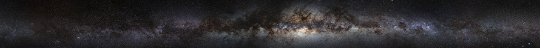
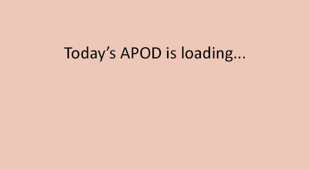

Kevin Healy's homepage
Astronomy instructor and planetarium director at Mesa Community College in Mesa, Arizona
Mesa Community College
MCC Homepage
Physical Science Dept.
Astronomy at MCC
MCC Planetarium
Astronomy Nights
Space News
NASA News
NASA Space Weather
ESA News
NRAO News
AAS News
Spaceflight Now
NASA Watch
Sky & Telescope
Clear Dark Sky Mesa
Exploration in the News
Parker Solar Probe
BepiColombo
DAVINCI
VERITAS
Curiosity rover
Perserverance rover
Mars Recon Orbiter
OSIRIS-REx
Lucy
Psyche
Juno Orbiter
Europa Clipper
GAIA
Hubble Space Telescope
Webb Space Telescope
Rubin Observatory
LIGO @ Caltech
Astronomy Picture of the Day

Other Resources
Real-time earthquake data for the past 30 days
Other real-time maps of earth and space data
Interactive Astronomy Calculations
Interactive Astronomy Visualizations
Miscellaneous Collection of Stuff...